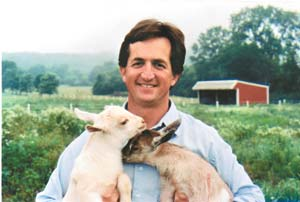
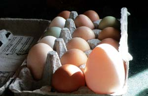
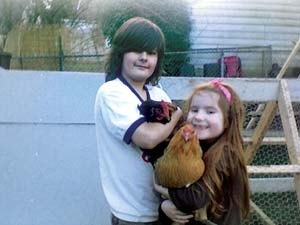
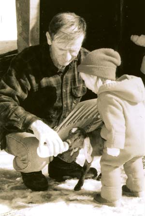
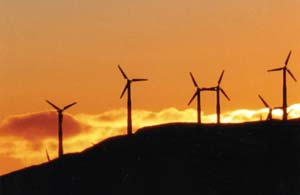
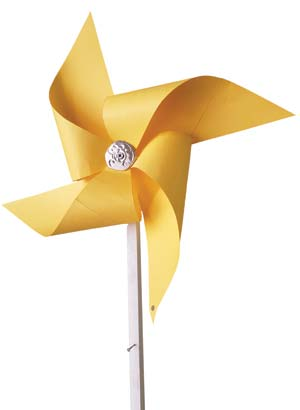

I have been an avid Mother Earth News reader for years and must admit that I’ve been hard pressed to think of a subject that I haven’t seen covered in your publication. It occurred to me that I probably have received more of an education in ethics, politics, economics and what many would call “just plain old common sense” by reading this one magazine than I ever did in public school.
The environment is one subject that is far too important to the future of this planet to leave to chance. As the days begin to feel shorter and the world appears to spin faster, I find solace every other month in a magazine that provides the opportunity to slow down, step back and question the orbit that this planet is in. Thank you.
We are happy to announce that we just installed 45 solar panels on our house. They tell us it is the biggest residential solar system in Georgia. So far we are generating about 7 kW of power from our panels.
It’s fun to see our electric meter spin backwards. We thank you guys for encouraging alternative power sources. Keep it up!
As long-time subscribers, we have frequently been motivated and encouraged by your articles. Inspired by your resources, we have taken many steps in our house building and homesteading.
Our ever-faithful chickens peck through the garden, earn 4-H ribbons, ignore the harassing dog and consistently provide us with wholesome eggs. As the photo reveals, our Andalusian hen surprised us with an exceptionally large egg! We thought you might enjoy seeing one of the small, or shall we say large, wonders that happen more often than not in the world around us.
I just read the article on solar hot water in your February/March 2007 issue. I really think you are slipping. There is no way that I would fork out $7,000 to save $9 a month on hot water. In one of your issues printed in 1979 your staff built a solar water heater from scratch using the liner from a water heater. The whole thing cost $150 and outperformed all of the $4,000 units on the market!
Terry - we are following up the February/March 2007 solar hot water article with a DIY solar hot water article in our next issue. And yes, the initial price tags for some solar systems are daunting, but when you look at the full lifetime analysis, as our February/March article did, you’ll find that you actually save money in the long run, thanks to the savings in energy costs. - Mother
It was an eye-opener to read the $2.2 trillion that the United States will spend on the Iraq war could have provided about 150 percent of our energy needs if it was invested in wind power ("Renewables to the Rescue," April/May, 2007). When you factor in the additional funds spent on Afghanistan and homeland security, we might begin to see the real economic cost of oil dependency. Moreover, how can we value the loss of life?
I just wanted to alert you that if your liberal political agenda continues to grow stronger, my subscription to Mother Earth News will go the same way my Time subscription went - out the window.
First I had to put up with your continual promotion of the foreign automotive industry. Next came your encouragement to buy RECs or carbon-offset programs, when scientists haven’t even agreed yet on whether the CO² that people produce is significant, or that CO² is contributing to climate change.
The final straw is "Renewables to the Rescue," (April/May 2007) on how much the Iraq war has cost. First of all, as a publication, it is none of your business, and second, it has no place whatsoever as an article in Mother Earth News.
Stick to your farming!
Everyone’s getting excited about ethanol, but scientists can't decide yet whether it takes more than a gallon of gasoline to make a gallon of ethanol. If you do a little bit of homework, you'll quickly discover that the whole concept of replacing gas with corn-based ethanol is ludicrous. Our productive land is already in production. Consumers are not willing to stop eating just so they can get gasoline from corn. Every acre we devote to ethanol production means that we need to plow up an acre of grazing land or knock down an acre of forest.
Using some numbers from the Internet, it looks to me that replacing our annual gasoline consumption would require 188 billion gallons of ethanol per year. At roughly 328 gallons of ethanol generated per acre of corn, this would require 573 million acres. But the U.S. has total cropland of only about 460 million acres (including pasture and hayland). We’d have to use every bit of it, plus more. The whole exercise becomes one of, “Ha! You thought the Brazilians were good at deforestation? You ain’t seen nothin’ yet!”
We’d have to plow the whole country from sea to shining sea - and that’s just to provide us with corn-based gasoline. We’d still have to use fossil fuels for our diesel oil, jet fuel, home heating oil, natural gas and electricity production. And for what? Knocking down all that forest and plowing all that rangeland would be a total disaster in terms of greenhouse gases. That’s the land that’s undoing the damage caused by the fossil fuels. We can’t spare it.
Replacing fossil fuels with ethanol is nuts. Claiming that doing so will save the environment is the looniest thing I’ve ever heard.
Bryan Welch’s article “Why I Farm” (February/March 2007) was in our recent co-op newsletter. I am writing to thank him for such a well-stated, from-the-heart piece. The issue of killing animals for food has been a hot topic for myself and my siblings since my sister, at age 9, decided not to “eat her friends” and has been a vegetarian ever since. As someone who has just started eating meat again after many years as a vegetarian, I still, at times, have questions for myself. The comment made in the article, “people who shared their lives with livestock were, on the whole, caring but not sentimental” is something I appreciate.
As loyal readers of Mother Earth News since the early ’80s, we have enjoyed the great information on alternative energy and many other subjects. We are vegans and have tolerated the many articles about raising and killing animals. However, when Bryan Welch’s article, “Why I Farm” appeared in the February/March 2007 issue, I felt I had to voice my concerns.
I would like to suggest that there is another way to live that does not require the killing of innocent, trusting animals. It seems odd to me that I even have to suggest this, but Bryan’s article makes it sound as though there is no choice in the matter, and that it is somehow more honorable to kill the animals yourself. Bryan attempts to justify killing as if it were compassionate and even spiritual. In his final statement, he claims that part of the reason he has more “life in his life,” is because of all the death in his life.
I am so baffled. I am used to people who raise and kill animals justifying it because they like the taste of meat and because they were raised to do it and it seems normal to them. But to attempt to justify it on spiritual grounds defies all logic. There is a way to live close to the Earth, in harmony with all life, enraptured by the endless miracles of nature without killing animals who have done no harm and who are completely at our mercy.
Peace to you and to all beings.
Bryan Welch replies:
Thanks for your letter, Judy. Indeed, I am aware that one can live a healthy life without consuming animal products. And I believe it’s an admirable, visible form of compassion.
However, I don’t believe this absolves us of nature’s most fundamental reality: When we consume food, other creatures die to create that food. Any plowed field is an environment in which few animals can exist. Every acre of soybeans, corn, wheat or any other food is an acre stolen from the creatures who would live there otherwise - they either are killed by the process or are never born since their theoretical parents fail to thrive for lack of habitat. A natural pasture, on the other hand, can be a rich wildlife habitat. My cattle, sheep and goats displace other grazing animals, surely, but they leave plenty of habitat for smaller animals that, on my pastures, amount to hundreds of species.
I’m also aware that a human being can theoretically survive on fewer acres of total land if we consume only vegetable products. I would argue, however, that a natural pasture is an example of humankind living in harmony with nature. And if two-thirds of my calories are produced on natural pasture carefully managed as wildlife habitat, then is my total impact on the animal world more or less egregious than a vegan diet dependent wholly on plowed-field agriculture? I don’t know the answer to that, and I’m not sure the answer can be fully described. At any rate, it’s complicated.
So I have chosen to convert my grass into meat, and my animals into food. I don’t believe it’s a superior - nor an inferior - ethical choice when compared with vegetarianism or veganism.
Regarding “Easy DIY Solar Lighting,” in the April/May 2007 issue: Years ago when we first moved to the country and before the grid reached us, we used 12-volt auto bulbs at night. Now we are using compact fluorescent light bulbs (CFLs) throughout the house, so this article was immediately interesting. But when I saw the 12-volt CFLs priced at $19, I was surprised. I turned back a couple of pages and saw 120-volt CFLs at $2. If I built the system described in your article, I’d go for a small inverter and use the 120-volt CFLs.
I found the article “Whither Wind?” (February/March 2007) about wind power very eye opening. I have had the opportunity to live within a few miles of several wind farms in Tehachapi, Calif. The wind farms consist of 165-foot towers and produce clean and quiet energy.
Every day the view of the wind farms is different depending on the weather and season. The sound of turning blades reminds me of the reduction of greenhouse gases. Living in a solar- and wind-powered home, I feel like I’m doing my part to help save our planet for future generations.
In 1990 we began our dream of country living at the base of beautiful Mars Hill Mountain in northern Maine. We built our small cabin in the woods surrounded by bountiful nature. We could not have chosen a more peaceful place to raise our two children.
Suddenly this all changed. Evergreen Wind Power developed the mountain as a windmill site. Landowners around the mountain were told they had no say in the project because it was being developed on private land.
In the past few months, 28 370-foot-tall wind turbines have been erected along the ridgeline of the six-mile-long mountain. These turbines can be heard clearly inside our cabin with all the windows closed. When we step outside, the sound of the massive propellers cutting through the air echoes off the mountain and sounds much like a freight train. I strongly believe in alternative energy sources such as turbines; however, these massive turbines do not belong near people’s homes. Eighteen families around the mountain have had their quality of life greatly diminished. My children are the fourth generation of our family to live on this land and most likely will be the last. I hope others learn from the Mars Hill wind farm disaster.
In “Whither Wind?” the author says, “If the thousands of tons of coal that your wind farm will replace were being mined a mile from your house, it might be a little easier to take.” I’m one of the people within a mile of a mountaintop removal mine. The blasts are like earthquakes, but every day. The coal company is planning to enlarge its 1,849-acre mine by another 100 acres. Across the valley, they’ve applied for a 2,000-acre mountaintop removal site adjacent to thousands more acres they’ve already been allowed to destroy.
Here in West Virginia there are opponents to wind farms. They typically complain about damage to their viewsheds and promote efficiency and “clean coal” mythology as the solutions. But there is no such thing as clean coal. There is, however, clean wind; so I’ll gladly take wind farms any day.
To see the devastation wrought by mountaintop removal, go to www.ohvec.org, www.ilovemountains.org, or www.crmw.net.
In "Dear Mother," April/May 2007, Alex Stanley’s letter said he wanted a weedless patio. For years I have been pouring boiling-hot water on the weeds in my stone paths and brick patio. It kills most anything growing, as well as any weed seeds in the cracks. This method has worked well for me for years. As far as I know, there is no damage done to the environment or the patio.
I’m a Wisconsin-licensed master plumber, with a background in conventional hydronic heating, and a NABCEP-certified solar thermal installer. I disagree with Bob Ramlow’s comments in “Go Solar for Free Hot Water” (February/March 2007) about evacuated tube solar collectors. They’re not more delicate, they do not overheat any more than an improperly designed flat plate system, and they do shed snow when correctly installed. In fact, they even produce heat with frost and snow covering the tubes. In many applications they offer a superior choice. I have installed many evacuated tubes and have not received a single complaint.
In the February/March 2007 issue I was grateful for the “Cultivating New Farmers” article. My wife and I participated in the “Farm Beginnings” program run by the Land Stewardship Project in Minnesota. This program has now expanded to Illinois and Nebraska. The program utilizes local farmers to introduce new and established farmers to sustainable farming. The “Farm Beginnings” program has been running for 10 years and has been successful in getting new farmers established and converting conventional farmers to sustainable methods.
Thanks to your magazine advertiser, we found the perfect hot tub, the Snorkel. We had changed all our lighting to compact fluorescent light bulbs, bought a new, much more efficient refrigerator, so undoing all of the savings with a conventional hot tub just didn’t make sense.
But the wood-burning hot tub certainly does! We have lots of scrap lumber on our property to burn. We live in an historical area, so a wooden water tank with a smokestack fits right in! We also live on the side of a mountain, and smog is not an issue. Thank you for directing us to the perfect hot tub!
I got my renewal notice in the mail recently, and it made me reflect how much Mother Earth News has affected my life in a positive way. Your featured articles by Barbara Kingsolver led me to read all her books.
I have always wanted to garden and now I have an acre of garden. Next to the garden, we have five beehives, from which we get honey and pollinators. We also have a chicken coop near the garden and let the chickens roam the yard, eating bugs. The eggs are great!
My wife and I will go to a cob-building workshop soon, to learn how to build our own home. I have studied solar, water and wind power and have found some good sources to purchase solar panels. We have bought two older Mercedes-Benz cars and make biodiesel in the barn, which is a bit nasty, but rewarding.
I read the reader letters complaining about ads, inserts and product articles. But I think the advertisements correlate well to the articles, which benefits the magazine and the readers. Ads give readers tools and information to make wise and informed buying decisions. The inserts make great bookmarks, or go through the shredder and right onto the compost pile.
My home library contains many books that Mother offers, which make great reference materials. I recently purchased Eben Fodor’s The Solar Food Dryer. My mother-in-law sun dries food using an old sliding door screen, but the horse pasture nearby draws flies, which like sun-dried food. After ordering and reading the book, I built her a dryer for Christmas. She loves it. Thanks for all you do. This is a great magazine.
As a follower of the self-sufficient and conservation lifestyle of Mother Earth News since the mid ’70s, I want to thank your staff for teaching us how to use only what we need from the Earth, leaving as much as we can for future generations. As a lifelong educator, I have been able to take the ideas from your publication and plant their seeds in the minds of young people. I have seen science fair projects fashioned from plans for passive solar heaters and fire-resistant insulation made of recycled newspaper, as well as other Mother inspired ideas. I find it interesting that automobile manufacturers are now beginning to produce hybrid vehicles - I first read about them nearly 30 years ago in Mother Earth News.
As my wife and I approach retirement, we have made a commitment to get closer to the lifestyle that we aspired to have when we were young. We were blessed last year to find 200 wooded acres in Kentucky that afforded us the opportunity to be the first (as far as we can determine) to build a dwelling with an eye toward living a symbiotic rather than a parasitic existence as we attempt to allow our forest to mature. Our hope is that we can pass this desire on to our children and grandchildren, so that they will continue the work that you, through us, began many years ago. I hope that my message serves to encourage you to continue your work. The value and the impact of the ideas you present is far greater than you might imagine. Thank you.
On Sunday it sounded like a bad cough: “Cakaroooo-Cakaroo!” But we all knew and came running out of the different corners and cocoons of our home; all of us bubbling with laughter. “That’s hilarious” declared my 11 year old. “It’s beautiful” said my 6-year-old. “How does he know how to do it?”
I find myself in awe of this ancient alarm clock ability. This little chick sold to us as a hen, has gradually grown into a gallant rooster, tail feathers gleaming and curling. All of a sudden, on one given day, he awakens and makes his manhood known, “I have crossed over, I am now a cockerel - hear me roar.”
I know we will have to let go of the joy his crowing is bringing us every day, and perhaps this is what makes his call to life every morning so precious. It is, after all, illegal to have a rooster in the city limits.
I am the quintessential “not a morning person.” However, this morning bugle from our rooster is morning magic. Every day he gets exponentially better at it. His first crow is part of my dream. As he becomes more energetic and persistent, he reminds me there is a new day to celebrate and business to be done. His crow is a bellowing celebration of life continuing, one I wish to join in with. Somehow his ancient, genetically determined capacity to wake up and crow makes everything seem whole. Everything seems like it is meant to be, even getting up; like everything should just happen because it does.
A compañera (woman friend) spoke to me yesterday about how our lives are all connected by a little cadenita (chain). Our actions pull each other along. We need this little chain of connection between us to hold onto, to keep going. The rooster crowing in my morning is making life whole. Could someone please speak to the authorities on my behalf? Tell them I need my hen even though he’s really a rooster.
Here’s another idea for extending the season for homegrown tomatoes. This year I planted for a late harvest because I would be on crutches due to surgery. We also had an unusually cold and rainy September, followed by an early freeze. Only 40 percent of my tomatoes had turned. So the day before the freeze, I brought in every tomato that was blemish-free (regardless of color), and lined them up in a sunny enclosed back porch. Then I checked them each week to cull the tomatoes that developed spots. They continued ripening, and we used the last of the tomatoes on January 15.
Were these late tomatoes the same as summer ripe tomatoes? No. But were they 10 times better than store-bought? Absolutely. This was a great, unexpected way to enjoy fresh tomatoes on our sandwiches during the snowy winter months.
I want to thank your readers for their kind letters concerning my Firsthand Report, “Grandpa’s Hobbit House” (October/November 2006). It warms my heart to know so many people are connecting with the Earth. My aim with the grandkids is to teach them love and respect for all things. The Hopi Elders tell us about loving the Earth. They say: Care for your plants as you care for your children and the world’s fear will be replaced with love. This love will rebalance the Earth and improve our health. Mother’s recent articles about growing food reflect this love. Way to go! Keep it up.
As I teach the grandkids more about the sacred ground and the balance of life, I enjoy their smiling faces and sparkling eyes. As they gaze in wonder at a worm wiggling in their hand, their excited voices bring joy to the entire garden, as only children can. At a moment like this, everything seems possible and I know life is good. Own your creation and make it lovely. Slow down and take smaller steps. Every now and then, step back and admire what you have created.
|
 NOAH WELCH Mother Earth News publisher Bryan Welch with two “kids.” |
ISTOCKPHOTO Corn is grown not only for food but as a crop to convert to ethanol. |
 LORI RIGGEN One of our chickens surprised us with this extra large egg. |
|
 LILIAN SARLOS The voice of the rooster is a call of celebration. |
 ANN LANMAN Grandpa Harvey feeds a baby goat while his granddaughter looks on. |
 TERESA WAGNER Wind turbines on a hill at sunset. |
|
 MATTHEW T. STALLBAUMER Craft a pinwheel to show your support for investing in wind, not war! For directions on making a simple pinwheel, see How To Make a Pinwheel. |
Wood Hot Tub Advertisement |
|